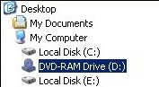
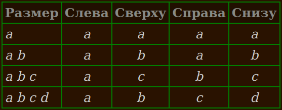

Виджет ttk.Treeview предназначен для представления иерархической структуры, чтобы пользователь мог использовать манипуляции мышью для раскрытия или скрытия любой части структуры.
Ассоциация с термином дерево (tree) обусловлена практикой программирования: древовидные структуры - обычное явление при разработке программ. Строго говоря, иерархия, отображаемая в виджете Treeview, представляет собой лес: здесь нет одного корня, а есть только набор узлов верхнего уровня, каждый из которых может содержать узлы второго уровня, каждый из которых может содержать узлы третьего уровня, и так далее.
Возможно, вы сталкивались с таким представлением как способом просмотра иерархии каталогов и папок. Вся иерархия отображается в виде контура с отступами, где каждый каталог находится на отдельной строке, а подкаталоги каждого каталога отображаются под этой строкой с отступами:

Пользователь может нажать на иконку каталога, чтобы свернуть (закрыть) его, скрыв все элементы в нем. Также можно кликнуть на иконке еще раз, чтобы развернуть (открыть) ее, и показать все элементы в каталоге.
Виджет Treeview обобщает эту концепцию, поэтому с его помощью можно отображать любую иерархическую структуру, а пользователь может сворачивать или разворачивать подразделы этой структуры с помощью мыши.
Для начала несколько определений:
item (элемент)
Одна из сущностей, отображаемых в виджете. Для файлового браузера элемент может быть либо каталогом, либо файлом.
Каждый элемент связан с текстовой меткой, а также может быть связан с изображением.
iid
Каждый элемент в дереве имеет уникальную строку идентификатора, называемую iid. Вы можете указать значения iid самостоятельно или позволить ttk сгенерировать их.
child (дочерние элементы)
Элементы, расположенные непосредственно под данным элементом в иерархии. Например, у каталога может быть два типа дочерних элементов: файлы и подкаталоги.
parent (родитель)
Для данного элемента, если он находится на вершине иерархии, считается, что у него нет родителя; если он не находится на верхнем уровне, родителем является элемент, который его содержит.
ancestor (предок)
Предки элемента включают его родителя, родителя его родителя и так далее вплоть до верхнего уровня дерева.
visible (видимый)
Элементы верхнего уровня всегда видны. В противном случае элемент будет виден, только если все его предки раскрыты.
descendant (потомок)
К потомкам элемента относятся его дети, дети его детей и так далее. По другому можно сказать, что поддерево элемента включает всех его потомков.
tag (тег)
Ваша программа может связать одну или несколько строк tag с каждым элементом. Вы можете использовать эти теги для управления внешним видом элемента. Например, вы можете пометить каталоги тегом
'd', а файлы - тегом'f', а затем указать, что элементы с тегом'd'должны быть выделены жирным шрифтом.
Вы также можете связать события с тегами, чтобы определенные события вызывали определенные обработчики для всех элементов, имеющих этот тег. Например, вы можете настроить файловый браузер таким образом, чтобы при нажатии пользователем на директорию браузер обновлял ее содержимое в соответствии с текущей структурой файлов.
Структура виджета Treeview будет состоять из нескольких столбцов. В первом столбце, который мы назовем icon column, отображаются иконки, которые сворачивают или разворачивают элементы. В остальных столбцах вы можете отображать любую информацию.
Например, простой виджет файлового браузера может использовать два столбца, в первом из которых будут отображаться значки каталогов, а во втором - имя каталога или файла. Вы можете отображать размеры файлов, разрешения и другие связанные данные в дополнительных столбцах.
Операции виджета Treeview позволяют использовать его даже в качестве редактора дерева. Ваша программа может удалить целое поддерево с его места в основном дереве, а затем присоединить его в совершенно другой точке.
Вот общая процедура настройки виджета Treeview.
Создайте виджет с помощью конструктора ttk.Treeview. Используйте аргумент columns, чтобы указать количество отображаемых столбцов и назначить символические имена каждому столбцу.
Используйте методы .column() и .heading() для установки заголовков столбцов (если они нужны) и настройки свойств столбцов, таких как размер и растягиваемость.
Начиная с записей верхнего уровня, используйте метод .insert() для заполнения дерева. Каждый вызов этого метода добавляет в дерево один элемент. Используйте ключевой аргумент open этого метода, чтобы указать, будет ли элемент изначально развернут или свернут.
Если вы хотите указать значение iid для этого элемента, используйте аргумент с ключевым словом iid. Если вы опустите этот аргумент, ttk создаст его и вернет как результат вызова метода .insert().
Используйте аргумент values этого метода, чтобы указать, что должно отображаться в каждом столбце этого элемента, когда он виден.
Чтобы создать виджет Treeview внутри заданного виджета parent:
w = ttk.Treeview(parent, option=value, ...)
Конструктор возвращает новый виджет Treeview. Его опции включают:
Таблица опций ttk.Treeview
class_ |
Вы можете указать имя класса виджета при создании этого виджета. Это имя можно использовать для настройки внешнего вида виджета; см. раздел 27, "Стандартизация внешнего вида". После создания виджета имя класса виджета не может быть изменено. |
columns |
Последовательность строк идентификаторов столбцов. Эти строки используются для внутренней идентификации столбцов в виджете. Столбец с иконками, идентификатор которого всегда '#0', содержит иконки сворачивания/разворачивания и всегда является первым столбцом. Столбцы, которые вы указываете с помощью аргумента columns, являются дополнительными к столбцу иконок. Например, если указать columns=('Name', 'Size'), в виджете появятся три столбца: сначала столбец иконок, затем еще два столбца, внутренние идентификаторы которых - 'Name' и 'Size'. |
cursor |
Используйте эту опцию, чтобы указать внешний вид курсора мыши при наведении его на виджет; смотрите раздел 5.8, "Курсоры". Значение по умолчанию (пустая строка) указывает, что курсор наследуется от родительского виджета. |
displaycolumns |
Выбирает, какие столбцы будут отображаться в действительности, и определяет порядок их представления. Значениями могут быть: 1. '#all', чтобы выбрать все столбцы и отобразить их в порядке, определенном аргументом columns. 2. Список номеров столбцов (целочисленные позиции, считая от 0) или идентификаторов столбцов из аргумента columns. Например, укажите columns=('Name', 'Size', 'Date'). Это означает, что каждый вызов метода .insert() будет требовать аргумента values=(name, size, date) для предоставления значений, которые будут отображаться. Назовем эту последовательность логической последовательностью столбцов. Далее предположим, что в конструкторе вы указываете columns=(2,0). Последовательность физических столбцов, столбцов, которые будут реально отображаться в виджете, будет три: первым будет столбец icon, затем столбец date (индекс 2 в последовательности логических столбцов), затем столбец name (индекс логического столбца 0). Столбец размера не появится. Тот же эффект можно получить, указав идентификаторы столбцов вместо позиций логических столбцов: columns=('Date', 'Name'). |
height |
Желаемая высота виджета, в строках. |
padding |
Используйте этот аргумент, чтобы разместить дополнительное пространство вокруг содержимого виджета. Вы можете указать либо одно значение размера, либо последовательность из двух, трёх или четырех таких значений, интерпретируемых в соответствии с этой таблицей:  |
selectmode |
Этот параметр определяет, что пользователь может выбрать с помощью мыши. Значения могут быть: selectmode='browse': Пользователь может выбрать только один элемент за раз. selectmode='extended': Пользователь может выбрать несколько элементов одновременно. selectmode='none': Пользователь не может выбирать элементы с помощью мыши. |
show |
Чтобы скрыть метки в верхней части каждого столбца, укажите show='tree'. По умолчанию метки столбцов отображаются. |
style |
Используйте эту опцию для указания имени стиля виджета; см. Раздел 47, "Настройка и создание тем и стилей ttk". |
takefocus |
Используйте эту опцию, чтобы указать, будет ли виджет посещаться во время обхода фокуса; см. Раздел 53, "Фокус: маршрутизация ввода с клавиатуры". Укажите takefocus=True, если вы хотите, чтобы виджет принимал фокус; укажите takefocus=False, если виджет не должен принимать фокус. Значение по умолчанию - пустая строка; по умолчанию виджеты ttk.Treeview действительно получают фокус. |
Здесь перечислены методы, доступные для виджета Treeview.
.bbox(item, column=None)
Для элемента с идентификатором
item, если элемент виден, этот метод возвращает кортеж(x, y, w, h), где(x, y)- координаты левого верхнего угла элемента относительно виджета, аwиh- ширина и высота элемента в пикселях. Если элемент не виден, метод возвращает пустую строку.
Если необязательный аргумент
columnопущен, вы получаете ограничительную рамку всей строки. Чтобы получить границу одного конкретного столбца строки элемента, используйтеcolumn=C, гдеC- это либо целочисленный индекс столбца, либо его идентификатор.
.column(cid, option=None, **kw)
Этот метод настраивает внешний вид логического столбца, указанного
cid, который может быть либо индексом столбца, либо его идентификатором. Для настройки столбца с иконками используйте значениеcid, равное'#0'.
Каждый столбец виджета Treeview имеет свой собственный набор опций из этой таблицы:
anchorЯкорь, определяющий место расположения содержимого столбца. По умолчанию используется значение 'w'.idИмя столбца. Этот параметр доступен только для чтения и устанавливается при вызове конструктора. minwidthМинимальная ширина столбца в пикселях; значение по умолчанию - 20. stretchЕсли эта опция имеет значение True, ширина столбца будет изменяться при изменении размера виджета. По умолчанию установлено значение1.widthНачальная ширина столбца в пикселях; по умолчанию - 200.
- Если не указано значение
optionили любой другой ключевой аргумент, метод возвращает словарь опций столбца для указанного столбца.
- Чтобы узнать текущее значение опции с именем
X, используйте аргументoption=X.
- Чтобы задать одну или несколько опций столбца, вы можете передать аргументы с ключевыми словами, используя имена опций, показанные выше, например,
anchor=tk.CENTERдля центрирования содержимого столбца.
.delete(*items)
Аргументами являются значения iid. Все элементы виджета, имеющие совпадающие значения iid, уничтожаются вместе со всеми их потомками.
.detach(*items)
Аргументами являются значения iid. Все элементы виджета, имеющие совпадающие значения iid, удаляются из видимого виджета вместе со всеми их потомками.
Элементы не уничтожаются. Вы можете снова добавить их в видимое дерево с помощью метода
.move(), описанного ниже.
.exists(iid)
Возвращает
True, если в виджете существует элемент с заданнымiid, илиFalseв противном случае. Если элемент в данный момент не виден, поскольку был удален методом.detach(), он все равно считается существующим с точки зрения метода.exists().
.focus([iid])
Если вы не указываете аргумент для этого метода, вы получаете либо iid элемента, который в данный момент имеет фокус, либо
'', если ни один элемент не имеет фокуса.
Вы можете передать фокус элементу, передав его iid в качестве аргумента этому методу.
.get_children([item])
Возвращает кортеж значений iid дочерних элементов, указанных аргументом
item. Если аргумент опущен, вы получите кортеж, содержащий iid-значения элементов верхнего уровня.
.heading(cid, option=None, **kw)
Этот метод используется для настройки заголовка столбца, который отображается в верхней части виджета для столбца, указанного
cid, который может быть либо индексом столбца, либо идентификатором столбца. Используйте значение аргументаcid, равное'#0', для настройки заголовка над столбцом иконок.
Каждый заголовок имеет свой собственный набор опций с такими именами и значениями:
anchorЯкорь, определяющий, как выравнивается заголовок в столбце; см. Раздел 5.5, "Якоря". По умолчанию используется значение tk.W.commandПроцедура, которая будет вызываться, когда пользователь кликнет на этом заголовке столбца. imageЧтобы представить графику в заголовке столбца (вместе с текстовым заголовком или вместо него), установите этот параметр для изображения, как указано в разделе 5.9, "Изображения". textТекст, который вы хотите отобразить в заголовке столбца.
- Если вы не вводите никаких ключевых аргументов, метод вернет словарь, показывающий текущие настройки параметров заголовка столбца.
- Чтобы узнать текущее значение некоторой опции заголовка
X, используйте аргумент видаoption=X; метод вернет текущее значение этой опции.
- Вы можете задать одну или несколько опций заголовка, указав их в качестве аргументов ключевых слов, например "
anchor=tk.CENTER".
.identify_column(x)
При задании координаты X этот метод возвращает строку вида
'#n', которая идентифицирует столбец, содержащий эту координату X.
Если предположить, что отображается столбец с иконками, то значение
nбудет равно 0 для столбца с иконками; 1 для второго физического столбца; 2 для третьего физического столбца; и так далее. Напомним, что номер физического столбца может отличаться от номера логического столбца в тех случаях, когда вы переставили их с помощью аргументаdisplaycolumnsконструктора Treeview.
Если столбец с иконками не отображается, то значение
nравно 1 для первого физического столбца, 2 для второго и так далее.
.identify_element(x, y)
Возвращает имя элемента в позиции
(x, y)относительно виджета, или'', если в этой позиции нет элемента. Имена элементов обсуждаются в разделе 50, "Слой элементов ttk".
.identify_region(x, y)
В заданных координатах точки относительно виджета этот метод возвращает строку, указывающую, в какой части виджета находится эта точка. Возвращаемые значения могут включать:
'nothing'Точка не находится в функциональной части виджета. 'heading'Точка находится в пределах одного из заголовков столбцов. 'separator'Точка находится в строке заголовков столбцов, но на разделителе между столбцами. Используйте метод .identify_column(), чтобы определить, какой столбец находится слева от этого разделителя.'tree'Точка находится в столбце с иконками. 'cell'Точка находится в строке элементов, но не в столбце иконок.
.identify_row(y)
Если Y-координата
yнаходится в пределах одного из элементов, этот метод возвращает iid этого элемента. Если эта вертикальная координата не находится внутри элемента, метод возвращает пустую строку.
.index(iid)
Этот метод возвращает индекс элемента с указанным
iidотносительно его родителя, считая от нуля.
.set_children(item, *newChildren)
Этот метод используется для изменения группы дочерних элементов, чей iid равен
item. АргументnewChildrenпредставляет собой последовательность строк iid. Все текущие дочерние элементыitem, не входящие вnewChildren, удаляются.
.insert(parent, index, iid=None, **kw)
Этот метод добавляет новый элемент в дерево и возвращает его iid-значение. Аргументы:
parentЧтобы вставить новый элемент верхнего уровня, сделайте этот аргумент пустой строкой. Чтобы вставить новый элемент в качестве дочернего элемента существующего элемента, сделайте этот аргумент iid родительского элемента. indexЭтот аргумент указывает позицию среди дочерних элементов родительского элемента, в которую вы хотите добавить новый элемент. Например, чтобы вставить элемент в качестве первого дочернего элемента, используйте значение 0; чтобы вставить его после первого дочернего элемента родителя, используйте значение 1; и так далее. Чтобы добавить новый элемент в качестве последнего ребенка родителя, сделайте значение этого аргумента 'end'.iidВы можете указать iid для элемента в виде строкового значения. Если вы не указали iid, он будет сгенерирован автоматически и возвращен методом.
Вы также можете указать несколько параметров элемента в качестве аргументов ключевых слов для этого метода.
imageВы можете отобразить изображение справа от иконки для строки этого элемента, указав аргумент image=I, гдеI- это изображение, как указано в разделе 5.9, "Изображения".openЭта опция указывает, будет ли этот элемент открыт изначально. Если вы укажете open=False, то этот элемент будет закрыт. Если указатьopen=True, то дочерние элементы будут видны всегда, когда виден сам элемент. Значение по умолчанию -False.tagsВы можете указать одну или несколько строк тегов, которые будут связаны с этим элементом. Значение может быть как одной строкой, так и последовательностью строк. textВы можете указать текст, который будет отображаться в столбце иконок этого элемента. Если задано значение, этот текст будет отображаться справа от иконки, а также справа от изображения, если оно указано. valuesЭтот аргумент содержит элементы данных, которые будут отображаться в каждом столбце элемента. Значения указываются в логическом порядке столбцов. Если задано слишком мало значений, оставшиеся столбцы будут пустыми; если задано слишком много значений, лишние столбцы будут отброшены.
.item(iid[, option[, **kw]])
Используйте этот метод для установки или извлечения опций в элементе, указанном
iid. Имена опций элемента см. в методе.insert()выше.
Без аргументов метод возвращает словарь, ключами которого являются имена опций, а соответствующими значениями - настройки этих опций. Чтобы получить значение заданной опции, передайте ее имя в качестве второго аргумента. Чтобы задать одну или несколько опций, передайте их в качестве аргументов ключевых слов в метод.
.move(iid, parent, index)
Перемещает элемент
iid, в указанныйparent, в позициюindex. Аргументыparentиindexработают так же, как и аргументы метода.index().
.next(iid)
Если элемент, указанный по
iid, не является последним дочерним элементом своего родителя, этот метод возвращает iid следующего дочернего элемента; если он является последним дочерним элементом своего родителя, этот метод возвращает пустую строку. Если указанный элемент является элементом верхнего уровня, метод возвращает iid следующего элемента верхнего уровня, или пустую строку, если указанный элемент является последним элементом верхнего уровня.
.parent(iid)
Если элемент, указанный
iid, является элементом верхнего уровня, этот метод возвращает пустую строку; в противном случае он возвращает iid родителя этого элемента.
.prev(iid)
Если элемент, указанный
iid, не является первым дочерним элементом своего родителя, этот метод возвращает iid предыдущего дочернего элемента; в противном случае возвращается пустая строка. Если указанный элемент является элементом верхнего уровня, этот метод возвращает iid предыдущего элемента верхнего уровня или пустую строку, если он является первым элементом верхнего уровня.
.see(iid)
Этот метод гарантирует, что элемент, указанный по
iid, виден. Все его предки, которые закрыты, открываются. При необходимости виджет прокручивается, чтобы элемент появился.
.selection_add(items)
В дополнение к уже выделенным элементам добавляет элементы указанные в
items. Аргументом может быть как один iid, так и последовательность iid.
.selection_remove(items)
Снять выделение с любых элементов, указанных аргументом, который может быть как одиночным iid, так и последовательностью iid.
.selection_set(items)
Выделяются только указанные
itemsэлементы; если до этого были выделены какие-либо другие элементы, они станут невыделенными.
.selection_toggle(items).
Аргументом может быть один iid или последовательность iid. Для каждого элемента, указанного аргументом, если он был выделен, снимается выделение; если он был невыделен, устанавливается выделение.
.set(iid, column=None, value=None).
Используйте этот метод для получения или установки значений столбцов элемента, указанного
iid. При одном аргументе метод возвращает словарь: ключи - это идентификаторы столбцов, а каждое связанное значение - это текст в соответствующем столбце.
При двух аргументах метод возвращает значение данных из столбца, идентификатором которого является аргумент
column. При трех аргументах значение элемента для указанного столбца устанавливается в третий аргумент.
.tag_bind(tagName, sequence=None, callback=None).
Этот метод связывает обработчик события, указанный аргументом
callback, со всеми элементами, имеющими тегtagName. Аргументыsequenceиcallbackработают так же, как аргументыsequenceиfuncметода.bind(), описанного в разделе 26, " Универсальные методы виджетов".
.tag_configure(tagName, option=None, **kw).
Этот метод позволяет опросить или установить опции, влияющие на внешний вид всех элементов, имеющих тег
tagName. Опции тега включают:
'background'Цвет фона. 'font'Шрифт текста. 'foreground'Цвет переднего плана. 'image'Изображение, которое будет отображаться в элементах с данным тегом.
При вызове с одним аргументом возвращает словарь текущих опций тега. Чтобы вернуть значение определенной опции
X, используйтеXв качестве второго аргумента.
Чтобы задать одну или несколько опций, используйте аргументы с ключевыми словами, например
foreground='red'.
.tag_has(tagName[, iid]).
Вызванный с одним аргументом, этот метод возвращает список значений iid для всех элементов, которые имеют тег
tagName. Если вы указываете iid в качестве второго аргумента, метод возвращаетTrue, если элемент с этим iid имеет тегtagName,Falseв противном случае.
.xview(*args).
Это обычный метод для подключения горизонтальной полосы прокрутки к прокручиваемому виджету. Подробности см. в Раздел 22.1, "Обратный вызов команды Scrollbar".
.yview(*args).
Это обычный метод подключения вертикальной полосы прокрутки к прокручиваемому виджету. Подробности см. в Раздел 22.1, "Обратный вызов команды Scrollbar".